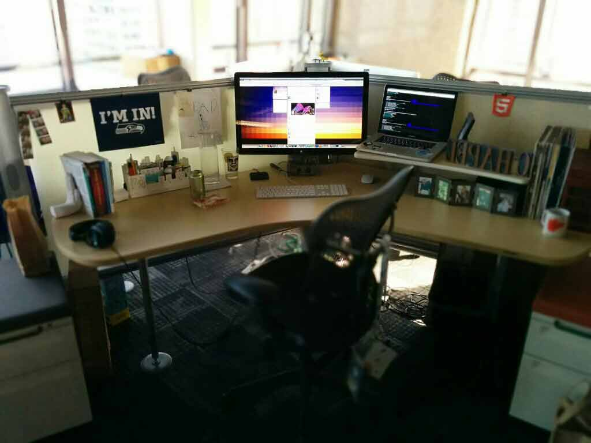
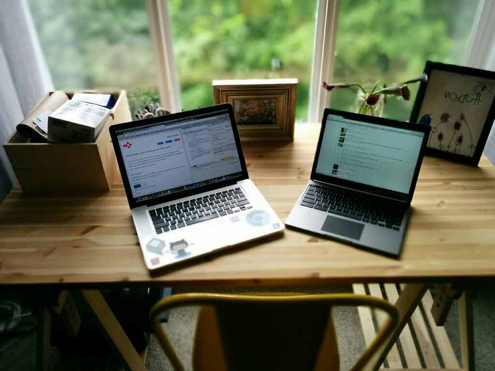

Let me share my setup(s) with you!
May 15, 2014I always enjoy reading up on how other developers work and the tools they use, so why not share what i'm using? :)
So let's dive in!
My desk at the office
{kind=link}
I work in downtown Seattle, and with the amazing view I have it's sometimes hard to get any work done.
It happens though believe it or not, and the following is what I use on a day to day basis to help me get the job done at work:
- Chrome with inspector tools (my #1, "couldn't live without" tool)
- Sublime Text 3 (usually with 3-columns - one for html, one for css, and one for js)
- Mac OSX Terminal - Main uses are:
grunt watchfor live reload- Subversion (svn) commands for version control
- Maven (mvn) commands for deploying
- Skype (this is our main form of communication when we're lazy)
- Charles Proxy (couldn't live without this either. map local files to files on a server so you don't have to keep installing / deploying while in development)
- Spotify (I'm usually the 'DJ' of the office, playing mostly indie-dance rawk)
My desk when working from home
{kind=link}
My family and I moved to Snoqualmie, WA in 2013 and couldn't be happier. We love everything about it. It's only 35 minutes from work (which is better than the hour it used to be), there are kids all over for our sons to play with, and it's got a nice small-town feel with still having all the shops and restaurants you could want.
My home desk is in my master bedroom, and looks out to the forest behind our house, which is also nice to look at while thinking about stuff. I bring my work laptop home so I can do office work, but also use my Chromeboox Pixel (thank you Google!) for personal stuff, which is mostly browsing reddit. :P
So that's it! Wanna share your workflow with me? Shoot me an email!
Questions, comments, concerns? Email me!